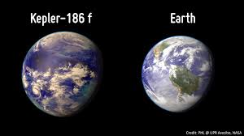
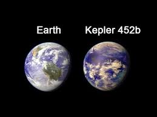
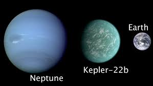
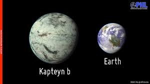
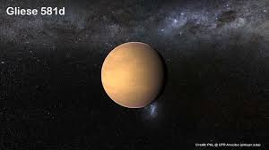
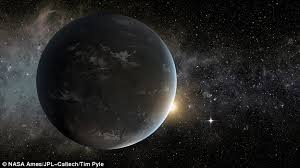
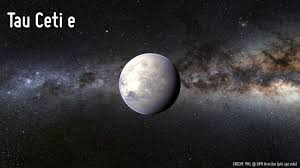

Have you ever thought of life after the Earth? Will we be able to survive after that? If yes then where? Where do you think we can go? What is the plan B of each and every person present on Earth? So, here I present you 7 most favourable planets where we can survive.
The Kepler 186 f is 500 light years away from Earth. It is orbiting around the M Type dwarf Star. Despite being the 5th planet, the Kepler 186 f is the only planet in this star system to be in the Goldilocks' Habitable Zone. The radius of this planet is 11% larger than Earth and the equilibrium temperature is minus 85 degree C. Interesting fact is that the orbital eccentricity of kepler 186 f is 0.04, which is almost equal to the Earth’s eccentricity.
The Kepler 452 b is found 1400 light years away from earth in the Cygnus Constellation, which means if we travel in New Horizon Spacecraft we would reach there after 26 million years. After somehow reaching there you will see a Sun like star, whose surface temperature is 5757K nearly similar to our sun. The orbital period of this planet is 385 days, just 20 days more than our year. Hence the temperature of this planet is almost equal to earth. That is minus 8 degree C.
The kepler 22 b is 620 light Years away from Earth, orbiting around a star whose volume is just 2% less than Sun. Temperature of this star is 5518K, but it is too dim to be seen with naked eye. Kepler 22 b takes around 290 days to complete a revolution.
This planet is 12.8 light years away from earth, and was the closest exoplanet to Earth, until 2016. After that Proxima Centauri b was discovered. Kapteyn b orbits in the Goldilocks Habitable Zone around its host star in 48.62 days. Despite being so near to its star the planet is in the habitable zone because the Parent Star is a Red Dwarf and has the surface temperature of 3550K. Later some signal from this system cast a doubt because they were consistent with stellar activity rather than a planet.
This planet is present in the Libra constellation and is approximately 20.4 light-years away from Earth. This is the fifth planet of that star system but named as 581 d because it was the 3rd one to be discovered. Star Gliese 581 has a surface temperature of 3480K. The last planet of that star system is Gliese 581 f and it is 110 million km away from the Star. And the distance of earth itself from the Sun is 150millions km.
This planet is 13.8 light years away from Earth. Present in the Ophiuchus Constellation, it is 2 second planet in Triple Planetary Star system. The Host star is M-type red dwarf whose surface temperature is 3380K. The Wolf 1061 c is orbiting around this star in just 18 days. And because it is too close, it is tidally locked. That means one side of the planet is permanently facing Sun and other is permanently away. The darker side could potentially be habitable.
Discovered in December 2012, this planet is 12 light-years away from Earth. Revolution of this planet is around a yellow dwarf in 168 days. Star system Tau Ceti is the five planet system which is present in the Cetus Constellation. But it is very small as compared to our Solar System.
These planets are mostly discovered by transit method and this video shows the Planet Hunting Technique